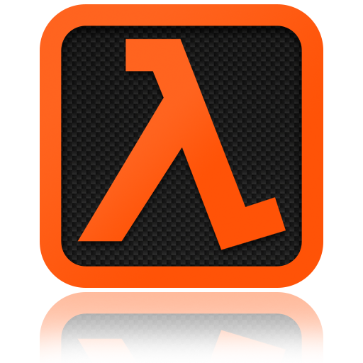

Founder of valve
Gabe Newell
После тринадцати лет работы в компании Microsoft Гейб Ньюэлл, совместно с Майком Харрингтоном, в 1996 году основывает компанию Valve Software, под попечительством Sierra Studios. Для упрощения была приобретена лицензия движка игры Quake, после чего началась полуторагодовая разработка игры Half-Life (HL).
Рабочим названием игры был «Quiver». Для работы над сценарием был приглашён профессиональный писатель-фантаст Марк Лэйдлоу. Игра стала научно-фантастическим трёхмерным шутером от первого лица. Гейб и Майк хотели создать нечто похожее на DOOM, такое же мрачное творение. Игра получила более пятидесяти наград издательств, среди которых титул «Лучшая игра всех времён».
Впервые игра была продемонстрирована на выставке E3 в 1997 году и стала настоящим хитом выставки. Игру планировали выпустить в 1997 году, однако релиз состоялся 31 октября 1998 года. Игра стала знаковой и принесла известность разработчику.
Далее Valve сосредоточилась на разработке SDK, который вышел в апреле 1999 года. Мин Ли, совместно с разработчиком, скрывающимся под ником «Cliffea», использует его для создания модификации HL — Counter-Strike (CS), многопользовательского шутера, основанного на идее противостояния группировки террористов и специального подразделения полиции. Игра стала одной из ведущих киберспортивных дисциплин.
Создание собственного движка и окончание Half-Life

Успех игры воодушевил компанию, и она сразу принялась создавать игру не менее масштабную, чем предшественник. Вся разработка держалась под строжайшим секретом. Спустя 5 лет разработки на E3 2003 была презентована Half-Life 2. Игра была выполнена на новом игровом движке — Source Engine, потому графическая часть на тот момент была вне конкуренции. Почти все предметы в игре можно было передвигать и деформировать. Игра заняла первое место на сайте metacritic.com в списке лучших игр всех времён.
Новый движок стал отличным подспорьем для создателей модификаций и сулил компании за этот счёт «вечную молодость». Компания рассчитывала на сообщество: предоставлен SDK, документация и набор утилит. Компания хотела сконцентрировать мододелов на новшествах и геймплее и сделала всё возможное для этого. В игре не были использованы реализованные в движке такие системы, как смена дня и ночи и деформация.
Но показать и выпустить игру — разные вещи. Игра не была выпущена в сентябре 2003-го, как обещалось. Напротив, релиз игры отодвигался уже на неопределённое время. Но произошла утечка, и в открытый доступ попала демоверсия HL2. Такая ситуация почти «убила» компанию, но она не сдалась, нашла деньги и выпустила игру 16 ноября 2004 года, собрав более 30 наград «Игра года».
По словам основателя, Гейба Ньюэлла, компания решила, что не стоит заставлять ждать фанатов ещё шесть лет, потому и была взята модель создания эпизодов, которая позволяла выпускать не менее качественные игры всего за полтора года.